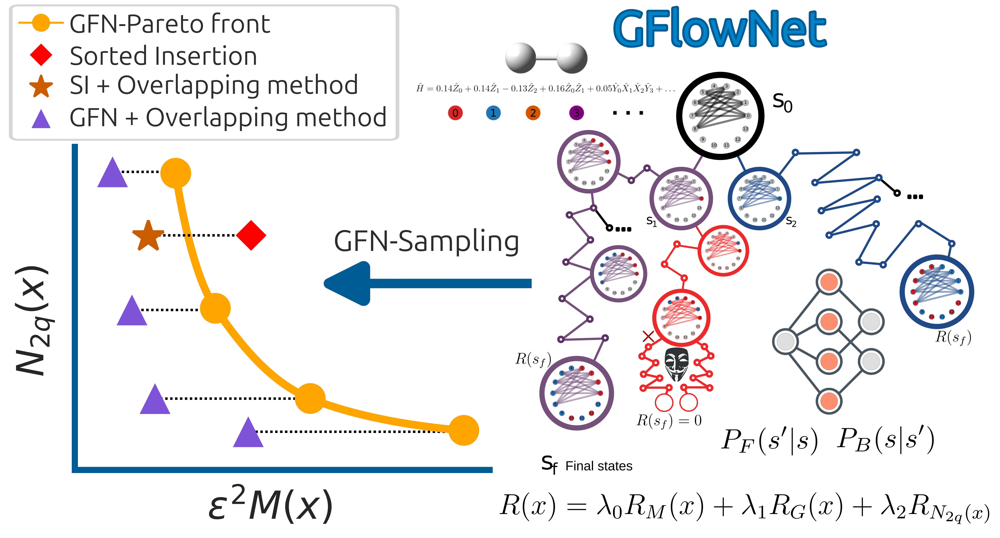

GFlowNets-MOpt
Code associated with my recent work on measurement optimization and Hamiltonian decomposition using flow-based generative models.
Repository linkQuantum Chemistry x Quantum Computing x Machine Learning
I am Isaac L. Huidobro-Meezs, from Mexico. I completed my undergraduate and master's studies in Chemistry at the Universidad Nacional Autonoma de Mexico (UNAM), and I am currently a PhD candidate in Chemistry at McMaster University in the ChemAI Lab.
At McMaster University, I develop flow-based and related machine learning approaches for quantum chemistry on quantum computers, including measurement optimization, improved sampling-based algorithms, and neural-network-inspired ansatzes for quantum dynamics.
My research explores how generative models can improve quantum algorithms for chemistry, for example by reducing measurements and two-qubit gates in grouping schemes or by learning derandomized measurement policies for shadow-based algorithms. Directions I am currently exploring include neural-wavefunction approaches for non-adiabatic processes and localized ansatze for quantum chemistry on quantum computers. I am especially interested in electronic structure, quantum dynamics, non-adiabatic processes, and in how generative models can be useful in settings where little to no data is available.

Repositories
Selected repositories connected to my recent papers, code contributions, and workshop activities.
Code associated with my recent work on measurement optimization and Hamiltonian decomposition using flow-based generative models.
Repository linkHands-on material for the QSciTech-QuantumBC-CMC 2025 workshop, including tutorial content related to optimization and quantum computing.
Tutorial linkFor a broader view of my code contributions, experiments, and ongoing projects, visit my GitHub profile.
Awards
2026
Support for research on scalable electronic structure methods for quantum computers.
2026
Awarded by McMaster University in recognition of graduate research achievement.
2025
Recognition for research at the intersection of AI, quantum computing, and chemistry.
2025
Received from the Department of Chemistry and Chemical Biology at McMaster University.
Earlier Recognition
Support received during earlier stages of my academic training.
Projects

Featured Paper
This project develops discrete flow-based generative models for measurement optimization in quantum computing, targeting lower hardware and measurement costs for chemistry-oriented quantum algorithms.
Research Award
I was recently awarded a Mitacs Graduate Research Award for a project centered on electronic structure in quantum computers. At a high level, the work explores scalable and more localized quantum chemistry strategies so that larger chemical systems can be studied with more practical quantum resources.
Ongoing Direction
I am also developing a line of work on generative derandomization, where generative models remain compatible with the quantum algorithm and learn measurement policies from early measurement results. The broad goal is to improve algorithmic efficiency without giving up the underlying physical structure of the problem.
Research Project
A generative approach to grouping compatible operators in Hamiltonians, aimed at reducing measurement costs for quantum simulation and chemistry applications.
Workshop Tutorial
Tutorial material for the workshop I delivered on Bayesian optimization for quantum computing and GFlowNets for measurement optimization in quantum computing.
Publications
2025
2024
2019
2017
2016
Talks
2026
2026
2025
2025
Contact
I am interested in opportunities across academic research and industry where quantum computing, chemistry, scientific software, and machine learning come together.